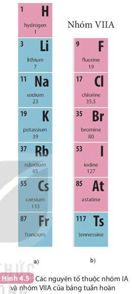
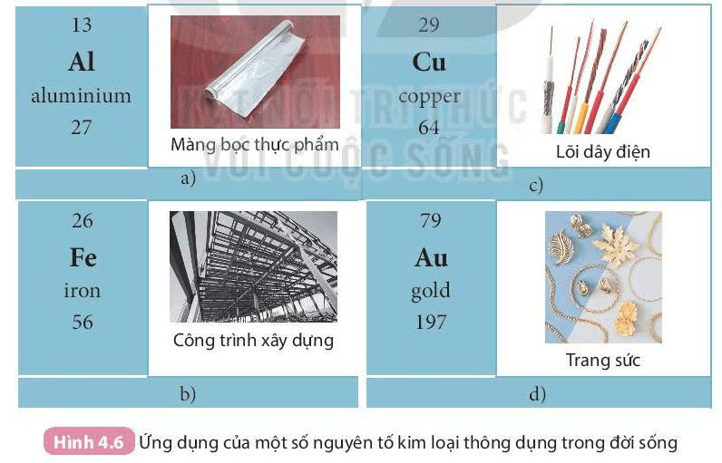

I. Nguyên tắc sắp xếp các nguyên tố hóa học trong bảng tuần hoàn
Năm 1869, nhà hóa học người Nga Men-đê-lê-ép đã xây dựng bảng tuần hoàn các nguyên tố hóa học theo chiều tăng dần của khối lượng nguyên tử.
Ngày nay, bảng tuần hoàn gồm 118 nguyên tố hóa học và được xây dựng dựa trên điện tích hạt nhân nguyên tử.
Nguyên tắc sắp xếp:
- Các nguyên tố được sắp xếp theo chiều tăng dần của điện tích hạt nhân.
- Các nguyên tố trong cùng một hàng có cùng số lớp electron.
- Các nguyên tố trong cùng một cột có tính chất gần giống nhau.
II. Cấu tạo bảng tuần hoàn các nguyên tố hóa học
1. Ô nguyên tố
Mỗi nguyên tố hóa học được xếp vào một ô gọi là ô nguyên tố.
Ô nguyên tố cho biết:
- Kí hiệu hóa học.
- Tên nguyên tố.
- Số hiệu nguyên tử.
- Khối lượng nguyên tử.
Lưu ý:
- Số hiệu nguyên tử = số proton = số electron.
- Số hiệu nguyên tử cũng là số thứ tự của nguyên tố trong bảng tuần hoàn.
Ví dụ: Oxygen có số hiệu nguyên tử là 8 nên:
- Số proton = 8.
- Số electron = 8.
- Thuộc ô số 8 trong bảng tuần hoàn.
2. Chu kì
Chu kì là dãy các nguyên tố mà nguyên tử của chúng có cùng số lớp electron.
Bảng tuần hoàn hiện nay gồm 7 chu kì được đánh số từ 1 đến 7.
- Chu kì 1, 2, 3 là chu kì nhỏ.
- Chu kì 4, 5, 6, 7 là chu kì lớn.
Số thứ tự của chu kì bằng số lớp electron của nguyên tử các nguyên tố trong chu kì đó.
3. Nhóm
Bảng tuần hoàn gồm 8 nhóm A và 8 nhóm B.
Các nguyên tố trong cùng một nhóm A có số electron lớp ngoài cùng bằng nhau nên có tính chất gần giống nhau.
Trong một nhóm, từ trên xuống dưới điện tích hạt nhân tăng dần.
Số thứ tự của nhóm A bằng số electron lớp ngoài cùng của nguyên tử.
Ví dụ: Oxygen có 6 electron lớp ngoài cùng nên thuộc nhóm VIA.

Một số nhóm có tên riêng:
- Nhóm IA: Kim loại kiềm.
- Nhóm IIA: Kim loại kiềm thổ.
- Nhóm VIIA: Halogen.
- Nhóm VIIIA: Khí hiếm.
III. Vị trí các nguyên tố kim loại, phi kim và khí hiếm trong bảng tuần hoàn
Trong 118 nguyên tố hóa học đã biết có hơn 90 nguyên tố là kim loại.
Các nguyên tố kim loại nằm chủ yếu ở góc dưới bên trái của bảng tuần hoàn.
- Hầu hết các nguyên tố thuộc nhóm IA, IIA, IIIA.
- Một số nguyên tố thuộc nhóm IVA, VA, VIA.
- Các nguyên tố từ nhóm IB đến VIIIB.
- Các nguyên tố Lantanide và Actinide.
Kim loại có rất nhiều ứng dụng trong đời sống.

Kết luận
- Bảng tuần hoàn hiện nay gồm 118 nguyên tố hóa học.
- Các nguyên tố được sắp xếp theo chiều tăng dần điện tích hạt nhân.
- Mỗi nguyên tố được đặt trong một ô nguyên tố.
- Bảng tuần hoàn gồm các chu kì và các nhóm.
- Kim loại, phi kim và khí hiếm có vị trí khác nhau trong bảng tuần hoàn.